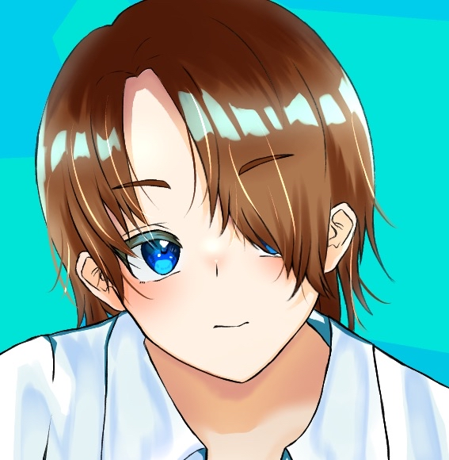
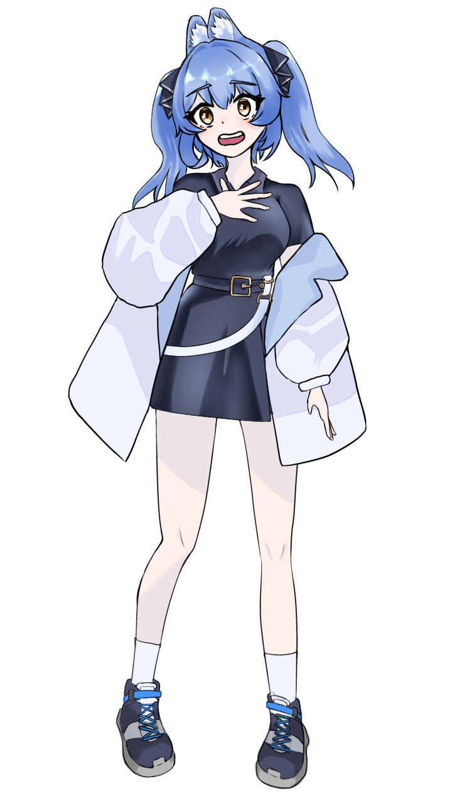
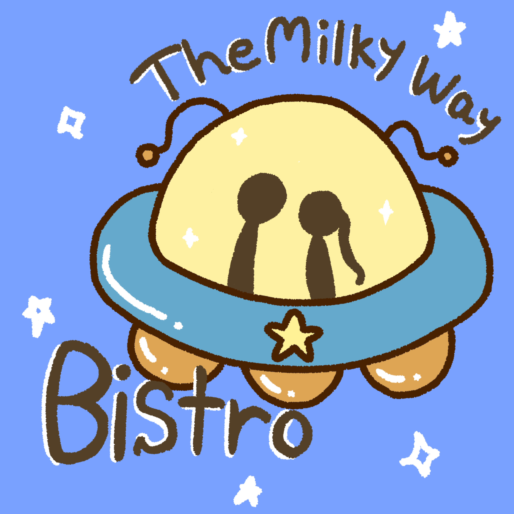

No.1
作品１.SNSアイコン用イラスト(女の子)
使用ツール : ibisPaint
ピンクのワントーンの中にポップなあしらいを散りばめ、全体的に可愛らしいイラストに仕上げました。

作品２.SNSアイコン用イラスト(男の子)
使用ツール : ibisPaint
透明感のある色彩と、瞳や髪の毛の繊細なハイライト表現にこだわりました。

No.3
作品３.サークル公式キャラクター「スカウト」
使用ツール : ibisPaint
大学のサークルオリジナルキャラクターのイラスト立ち絵を作成しました。この作品は一か月ゲームジャムを行った際、立ち絵イラストを担当した時のイラストです。ストーリー系のゲームなので、キャラクターの表情がユーザーに伝わりやすいように意識しました。

No.4
作品４.架空ビストロ「The Milky Way Bistro」のロゴ
使用ツール : ibisPaint
架空のビストロのロゴを作成しました。宇宙をテーマにしたビストロなので、宇宙を連想させるような色彩と、星や惑星をモチーフにしたデザインにしました。
また、「Milky Way」が天の川を意味することから中央に男女を配置しました。
